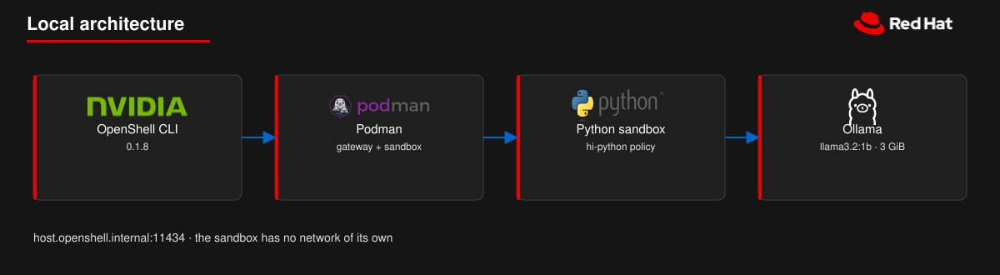
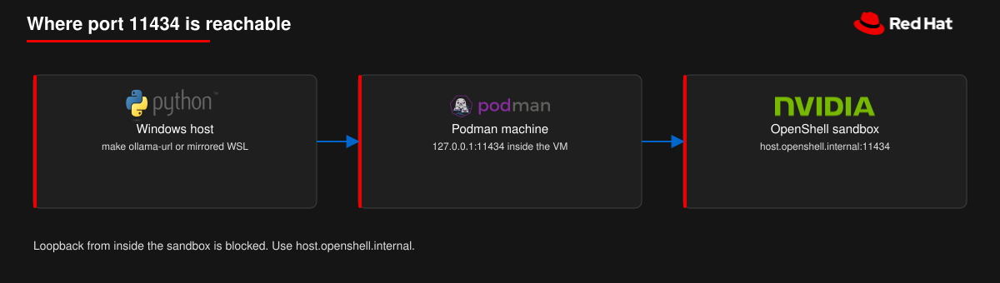
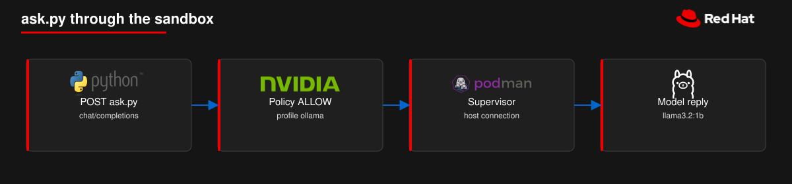

Run an AI agent inside an isolated sandbox that can talk only to the model you allow. In this guide you start Ollama with Podman, connect OpenShell, and confirm the sandbox reaches the model through a network policy. Estimated time: 15 minutes. Requirements: Podman and 4 GiB of free RAM.
A Podman sandbox calls Ollama llama3.2:1b through host.openshell.internal:11434. The gateway is OpenShell 0.1.8. The same client is examples/ask.py.

The sandbox has no network of its own. The supervisor connects to Ollama.
Glossary
Sandbox
Isolated container where your code runs, without its own network.
Gateway
Service that creates and manages sandboxes.
Supervisor
Process that decides which outbound connections leave the sandbox.
Profile / Provider
Policy profile and registration of the inference backend (Ollama).
1 Quickstart
What it does: clones the repo, starts Ollama, installs the gateway, runs one ask, then cleans up.
git clone https://github.com/maximilianoPizarro/hello-openshell
cd hello-openshell
make up
make gateway
make ask
make down
make up starts Ollama and pulls the model. make gateway installs OpenShell 0.1.8. make ask runs examples/ask.py in the hardened Python sandbox. You should see one Spanish sentence about what a sandbox is.
You should see. Status Connected and Version 0.1.8 after make gateway; a short Spanish reply after make ask.
What it does: shows how the host, the Podman machine, and the sandbox reach Ollama.
Platform
Podman
Host URL for Ollama
Gateway
Linux
Native
http://127.0.0.1:11434
On the host
macOS
podman machine
Published port on localhost
Inside the Podman machine
Windows
podman machine on WSL2
localhost with mirrored networking, or machine IPv4 with NAT
Inside the Podman machine
scripts/ollama-url.sh prints the host URL. The sandbox always uses host.openshell.internal:11434. On Windows, networkingMode=mirrored in %USERPROFILE%\.wslconfig makes localhost work from the host. You need the Podman machine started and cgroup v2 enabled. Inside podman machine ssh you are root.

Inside the Podman machine, 127.0.0.1:11434 answers. The sandbox name is host.openshell.internal.
What it does: runs examples/ask.py in a sandbox so the policy can allow the POST and the supervisor can reach Ollama.

The policy allows the POST. The supervisor connects to Ollama.
Important.fake is a placeholder: the client requires a key, but Ollama does not validate it. The value is visible to the process. For a real credential, create a provider and attach it with --provider instead of --env.
What it does: stops the lab and removes the downloaded models when you use -v.
make down
Or delete the sandboxes, then run podman compose -f deploy/compose.yaml down -v. That also deletes the volume deploy_ollama, including the downloaded models.
You should see. No running Ollama container and no active sandboxes for this lab.
When something fails
Category
What you see
Where to look
Platform
podman cannot connect
podman machine start on macOS/Windows. On Linux, start the Podman socket.
Memory
The Ollama container is killed
podman stats ollama. Raise mem_limit in deploy/compose.yaml to 4g. Stay on llama3.2:1b when RAM is tight.
Model
/v1/models has no llama3.2:1b
podman exec ollama ollama pull llama3.2:1b is still running. podman logs ollama.
Network (Windows NAT)
curl to 127.0.0.1:11434 from Windows returns connection refused
Use make ollama-url, or switch WSL to networkingMode=mirrored.
Gateway
The gateway creates no containers
socket_path must be the daemon that lists ollama.
Image
Sandbox exits naming Landlock or seccomp
The kernel refused the filter. OpenShell 0.1.8 needs that check.
Policy
no matching policy names a binary
On the hardened image the interpreter is /usr/bin/python3.12. Update the profile and keep resource_version.
Policy
configure an explicit workload group
The image user 65532 has primary group 0. Pass --policy deploy/hi-python.policy.yaml.
Policy
resolves to always-blocked address
The sandbox URL used loopback. Use host.openshell.internal.
What you did
You started Ollama, connected an OpenShell 0.1.8 gateway, and ran an agent in a sandbox that could reach only the model you allowed.
Next
Change the model in MODEL_NAME and pull it with Ollama.
Edit the policy in deploy/hi-python.policy.yaml or the profile in deploy/ollama.profile.yaml.